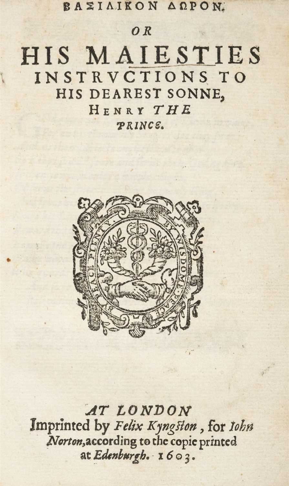

El Basilikon Doron
Que es?
El Basilikon Doron es un tratado sobre el gobierno escrito por el rey Jacobo VI de Escocia y I de Inglaterra en 1599. Basilikon Doron (Βασιλικὸν Δῶρον) en griego significa regalo real, dado que está escrito en forma de una carta privada al heredero real, Enrique de Rothesay. Después de la muerte de Enrique en 1612, Jacobo se lo dio a su segundo hijo, Carlos, nacido 1600 y que reinaría como Carlos I. Siete copias fueron impresas en Edimburgo en 1599 y varios miles de ejemplares más fueron republicados en Londres en 1603.
Este documento está dividido en tres libros, estableciendo directrices generales para ser un monarca eficaz. El primer tomo describe el deber de un rey hacia Dios como cristiano, el segundo se centra en las funciones y responsabilidades del cargo y el tercero en el comportamiento apropiado para la vida diaria de un monarca.
El Basilikon Doron emplea el argumento del derecho divino de los reyes, como en The True Law of Free Monarchies, también escrito por Jacobo. Advierte contra los "papistas" y se burla de los puritanos y sigue así la filosofía del rey de un "camino medio", reflejado en el prefacio a la Biblia del rey Jacobo. Defiende eliminar los Apocrypha de la Biblia.
El Basilikon Doron publicado finalmente bien puede haber sido un intento de retratar al rey bajo una luz favorable. James Sempill ayudó a Jacobo a componerlo y Robert Waldegrave, al que le fue impuesto secreto, imprimió siete copias a petición real. Henry Taylor afirmó que fue impreso en la imprenta de Waldegrave. Richard Royston, y William Dugard posteriormente, editaron versiones posteriores.
Primer libro
La primera parte está centrada en ser un buen cristiano, instruyendo a su hijo en amar y respetar a Dios, así como en temerle. Además, es esencial estudiar estrechamente las Escrituras (la Biblia) y especialmente algunos libros concretos de los Testamentos Antiguo y Nuevo. Finalmente, le recomienda que ruegue a menudo y sea siempre agradecido por lo Dios le ha dado.
Segundo libro
En el segundo libro, Jacobo animó su hijo a ser un rey bueno y no un "tirano", estableciendo y haciendo cumplir las leyes así como gobernando con justicia e igualdad. Para potenciar la economía afirma que es importante invitar mercaderes extranjeros al país y basar la moneda en oro y plata. Según Jacobo, un monarca bueno tiene que estar bien familiarizado con sus súbditos y por lo tanto es sensato de visitar todos los reinos cada tres años. Durante la guerra, se han de escoger comandantes veteranos pero capaces para dirigir un ejército compuesto de soldados jóvenes y ágiles. En la corte y en su casa, se ha de seleccionar cuidadosamente a criados y señores leales. Cuándo sea hora de escoger una mujer, el monarca recomienda que sea de la misma religión y que tenga generosas propiedades. Aun así, no se debe inmiscuir en la política de gobierno sino cumplir sus deberes domésticos. En cuanto a la herencia, para asegurar la estabilidad el reino debería estar destinado al hijo mayor y no ser dividido entre todos los hijos. Finalmente, lo más importante para Jacobo es que su hijo supiera bien su oficio, gobernar a sus súbditos. Para ello, debe estudiar las leyes de su reino y participar activamente en el Consejo. Además, debe estar familiarizado con las matemáticas, para propósitos militares, y la historia mundial, para política extranjera.
Tercer libro
La parte final del Basilikon Doron se dedica a la vida diaria de un monarca. Jacobo aconsejó su hijo comer carne para ser fuerte y cumplir con sus deberes itinerantes y bélicos. Advierte que no se debe beber y dormir excesivamente. Además, su guardarropa debe ser limpio y apropiado y nunca debe dejarse que cabello y uñas crezcan mucho tiempo. En su escritura y discurso, se debe utilizar un lenguaje sincero y sencillo.
Para el rey, todas estas directrices conforman un código básico a seguir por todos los monarcas y jefes de estado al gobernar si quieren ser diligentes. Jacobo reunió estas direcciones a raíz de su experiencia propia y la educación que había recibido, y se la ofreció a su hijo en el Basilikon Doron con la esperanza de que fuera un buen gobernante y, quizás, de que lo transmitiera a generaciones futuras.